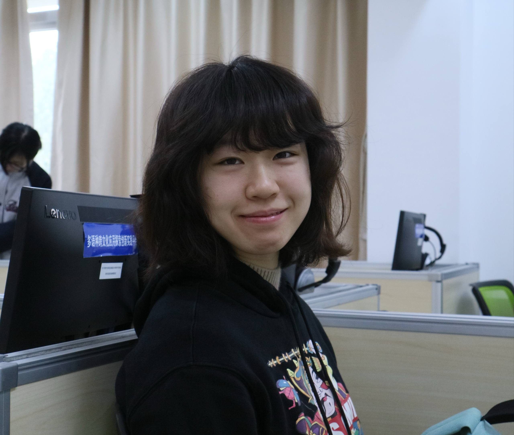

02 / Team
Meet the Team
Each member owns one service within the PropBank ecosystem.

Chen Hongshan
Marketplace
Buy, sell, borrow, swap cosplay items with trust and transparency.
Individual Portfolio →Guo Yuhao
Workshop
Community tutorials, guides, and cosplay learning resources.
Individual Portfolio →Jae (Kim Jaehyeok)
CreatorHub
Friend-centered community sharing, event albums, and creator discovery.
Individual Portfolio →Shared Utilities
Hongshan
PropMes (Messaging) & Friends
In-app chat, friend list, and user profiles for transaction coordination.
Xiao Ao
Login, Home Page & Sidebar
Authentication flow, landing page, and sidebar navigation.
Yuhao
PropScan (AI Feature)
Upload an image to identify props and find related guides, listings, and posts.
Jae
Settings & Profile
Account settings, user profile, notification preferences, and reputation display.